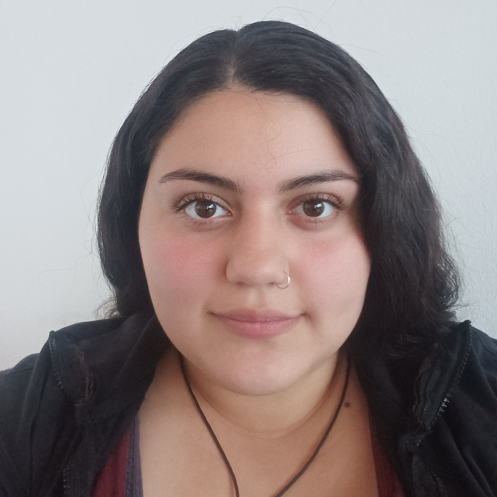

Estefany Scarlette Serrano Jaque
Técnico en Programación de Nivel Medio | Estudiante Universitaria

Técnico en Programación de Nivel Medio | Estudiante Universitaria
Tengo 23 años y soy de Santiago, Chile. Soy Técnico en Programación de Nivel Medio y actualmente curso mi último año de universidad.
Me considero una persona creativa, detallista, responsable y comprometida con el aprendizaje continuo. Disfruto desarrollando soluciones tecnológicas y enfrentando nuevos desafíos relacionados con la programación.
Objetivo Profesional: Desarrollarme en el área de tecnologías de la información, participando en proyectos que permitan aportar valor mediante soluciones innovadoras y eficientes.
Desarrollo de sitios web utilizando HTML, CSS y JavaScript aplicando diseño responsive.
Rol: Desarrolladora Frontend.
Aplicación web para administrar información de despachos, clientes y productos.
Rol: Desarrolladora Full Stack.
Plataforma para controlar stock, productos y movimientos dentro de una empresa.
Rol: Desarrolladora Backend.